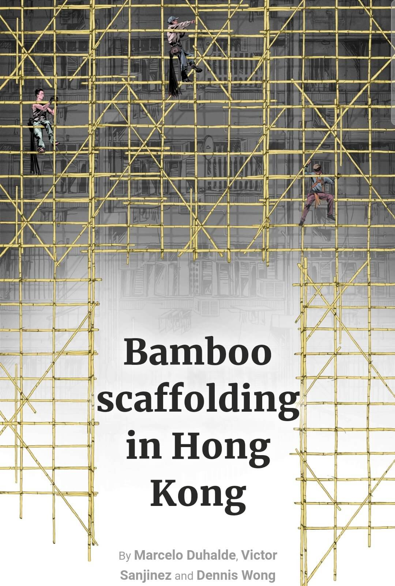

INFOGRAFÍA IMPRESA
Se pueden distinguir varios gráficos, algunos grandes y solos y otros más pequeños agrupados entre sí. Con estos se quiere entregar información a cerca del tema que se va a tratar y se complementa con texto.

Lo primero que destaca es un gráfico gigantesco, el cual está además al centro de la lámina; se nos presenta una ilustración de las estructuras de bambú que usan en Hong Kong para sostener a los constructores mientras trabajan.

Al costado derecho del gráfico anterior, hay una imagen que es complementaria al anterior; se puede ver qué elementos y cómo se deben utilizar para la protección de los trabajadores de la construcción. Y en el que se encuentra en la parte inferior de la infografía, podemos encontrar una representación de cómo estos constructores se sostienen a través de las estructuras.
Luego se muestra como son los nudos que se deben utilizar para amarrar los palos de bambú en estas estructuras para que soporten sin problema.
Y en la del costado izquierdo, se enseña la anatomía de la planta de bambú, para saber que es lo que en realidad se está utilizando en las estructuras.
INFOGRAFÍA DIGITAL
Lo primera que se nos muestra, no es el mismo gráfico que vimos en la versión impresa, se nos muestra la estructura de bambú junto a distintos constructores, la cual hay que ir deslizando para ver de manera completa.
En la siguiente imagen, se nos muestra el antes y después de un constructor, no de él, sino de su vestimenta y equipo de trabajo; para poder ver ambos, se debe cambiar a través de botones.
Más adelante se nos muestra más específicamente como debe ser utilizada de manera correcta cada parte del equipo de seguridad de cada constructor, para que todo salga bien, sin peligro. A medida que se va deslizando van cambiando las distintas partes del equipo y sus explicaciones.
También se nos deja material audiovisual, por si se desea saber más; en este se aporta información que es muy difícil representar por medio de ilustraciones y gráficos nada más.
¿Cómo podrían justificarse todas las modificaciones? ¿Se trata de una simple adaptación de datos de un sustrato a otro? Convendría pensar en una reestructuración completa del trabajo infográfico, que se hace atiendiendo a los usos y costumbres asociadas a cada medio?